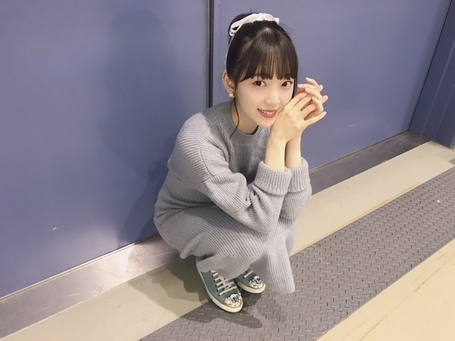
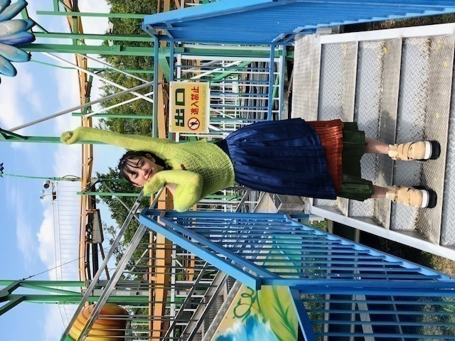
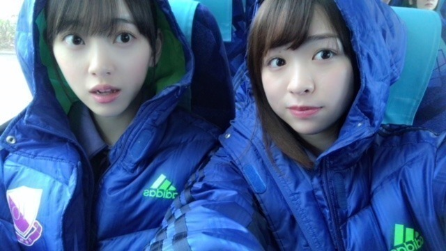

2018/0929Sat夜空の雲
今日は仙台にて握手会でした
はしゃぎすぎて途中声が枯れ気味になり
ご心配をおかけしました
お昼は牛タンカレーと牛タンとお米と
かぼちゃコロッケとサラダを食べました
ご飯が美味しいって幸せ

衣替えをし、私服もすっかり
秋冬服になりました〜
ニット！もこもこ！ふわふわ！
パーカーもたくさん着たいな



最近は、ほぼ毎日ホットギミック
日々いろんなことがあり
いろんな感情があり
成田初として楽しみながら
時に、切なく苦しみながら
撮影をしています。
恋愛を中心とした
恋愛だけではない
さまざまな人間模様。
新たなジャンルの恋愛映画として
若い方はもちろん大人の方にも
見ていただきたいです。
老若男女問わず
見ていただけるような素敵な作品になるよう
今の私の全力を出しきりたいと思います。
山戸監督を信頼しているので
安心して目の前のことに
ぶつかっていきたいな
発表されたキャストの方々
まだ発表されていない皆さんも含め
本当にステキな方々とスタッフさんに囲まれ
充実し、楽しい現場です
毎日やりがいしかないし
既にクランクアップが寂しい...やだ...
橘亮輝役の清水尋也さんは
渇き。やミスミソウなどで観ていて
お芝居に圧倒されていたのですが
現場でも清水さんが
橘くんにしかみえなくて
私も自然と初ちゃんになれます。
日々吸収させていただいています。
小田切梓役の板垣瑞生さんは
歳下とは思えないくらい大人っぽくて
梓のまったりと甘い感じが
普段から滲み出ていて凄いなぁと
思っています。
清水さんと話しているのを聞いていると
天然？なのかな...？
成田凌役の間宮祥太朗さんは
私のお兄ちゃん役なのですが
優しくて落ち着いている所が
凌くんそのままで、
実際にお兄ちゃんがいたら
こんな感じなのかなぁ
という安心感がいつもあります。
私も負けじと頑張らなくちゃ！！
他にもお話ししたいことがたくさん
あるのでブログやレコメンでも
ちょくちょく裏話お話ししていきますね

では
2018/0925Tueホットギミック
2019年公開予定の
映画 ホットギミックに
成田初役で
主演をさせていただくことになりました。
監督は山戸結希監督です！
ハルジオンのMV以来の御一緒で
あの頃のふわふわとした自分を
見てくださっていた方。。
だからこそ身を委ねて
映画版ホットギミックの
そして山戸監督映画の
世界に飛び込んでいきたいと思います
台本をいただいて読んだ時、
原作漫画の雰囲気とはまた違った
山戸監督らしさが溢れる世界で
1つの意味合いで終わらない
深く深くやわらかく美しいものだなぁと感じ、
1人でも多くの方に観てもらいたいって思いました。
初めての映画出演で
ドキドキ、不安はありますが
クランクインしてからは
日々の撮影で新たに感じることや
得られることがたくさんあり
成田初として生きるこの時間を
大切にしたいなぁ、と思いました。
3人の男の子の間で揺れ動き
ゆらゆらとしながらも
少しずつ強く
変わっていこうとする
初ちゃんを私なりに演じられるよう
頑張ります。
そして、
恋愛映画を普段あまり観ない方にも
是非観てもらいたい作品です。。
誰かの心に何かしらのものが
刺さるような作品にしたいな...
嬉しい報告ができて良かった〜


では！
日々前進。
2018/0918Tue優しい目
こんばんは
やっとブログをかける時間ができましたー！
よしよし
最近は
ガールズアワードやmステに
出演できずでしたが
ガルアワはたまたま携帯で開いたら
飛鳥が歩いてきて
すぐにスクショして送りつけました。笑
みんな可愛かった〜
mステは見れなかったけど
ばっちり録画したから見よう！
私も、頑張らないとだね

おー！！！

↑わたしの服がさりげなくサイリウムカラーです
たまたまかな？
では
短くてごめんなさい！
明日のレコメン23:45〜きいてね
2018/0916Sun雲
雲の形をみるのが好きなのですが
秋って夏の雲をぼかしたような形だな〜って
思いながら最近は雲を見ています
きっと夏よりも柔らかく
優しいのが秋なんだと思う
秋は生まれ月っていうのもあるけど
胃にも優しいし目にも肌にも優しいので
個人的には大好きです

最近観た映画は
"SUNNY 強い気持ち・強い愛"と
"寝ても覚めても"
SUNNYは
たくさん泣いたし、笑ったし
キャストの皆さんが本当に個性豊かで
観て良かったです
友達に辛いことがあったとき、
自分のこと以上に辛く苦しくなる気持ちに
凄く共感しました
いつもそばにいてくれたからこそ
守りたいっていう思いが強くなる
寝ても覚めてもは
唐田えりかさんの
ナチュラルな関西弁に
ずっときゅんきゅんしてました
時間の流れがゆったりに感じつつも
起こっている出来事は衝撃の連続...
恋はその人だけのもので、特別で
だからいろんなドラマがあって
面白いんだなーと思いました
月に3本以上は観れてるけど
まだまだ時間が足りません。。
月に3本以上は観れてるけど
まだまだ時間が足りません。。
実は、SUNNYは絢音と観たんです
そのままオフを一緒に過ごしたんだけど
初期の頃行ってたご飯屋さんに行ったり
映画観たりお買い物したり
ずっとずっと話が尽きなくて
めっちゃ、楽しかったです
なんでも話せる上に
気も使わないし
笑いのツボも同じで
いつも支えられっぱなしだから
私もたまには絢音の支えになれたらいいな
ありがとう！
ありがとう！

diorの新作ルージュがお気に入り
風も食べ物も植物も服もメイクも
すっかり秋ですね
すっかり秋ですね

最近はラベンダー色の
ニットカーディガンを買いました
発売中の ar
9/21発売の platinum FLASH
よろしくお願いします！
挑戦や新しいことや試練や課題って
怖さもあるけど
でも絶対に絶対に
楽しいことだと思う
だって新たな景色や自分を
発見できる絶好な機会だもん
楽しいことは楽しむべき！


じゃね。
2018/0910Mon遣る瀬無いなって。
こんばんは
もうすっかり秋の風が吹いていますね
炊き込みご飯、さんま、栗
食べたいなぁ
甘党ではないので秋も変わらずご飯系がすきです。
皆さんも
秋の味覚は好きですか？

堀未央奈です
最近はずっと体調を崩していて
たくさんの方に迷惑や心配をおかけしました
健康第一で成り立つこの活動。
改めて体調管理をもっと頑張らないと、と
思いました...
だいぶ良くなり今は元気に生活しています。
気をつけます。
優しい言葉を掛けてくださった方々
ありがとうございました。
秋冬服が好きなのですが
ニットとかふわふわなものとか
あとコートもいろんな種類、
デザインのを
今年は集めたいなぁと思っています。
くすんだクレヨンみたいな
色もかわいいけど
はっきりとした赤、茶も最近は着るんです
秋冬は、
フランスの女の子みたいな
柔らかさの中に個性もあっての服やメイクに
挑戦したいなって思っています！
自分を表現できるもの
例えば私服やメイクもだし
いろんな撮影やブログの書き方など
堀未央奈 をどう表現していこうか
常日頃、模索しながら生きています
だからいろんなものにアンテナを張って
不器用で何もできないからこそ
"挑戦"を繰り返しているのかな...
私探し
一生のテーマで
簡単には見つからなさそうだけど
少しずつ少しずつ
私を好きになっていって
好きになってもらえたら
それ以上の幸せは無いかなって思いました。
頑張りたいです
そういえば
ずっと行きたかったフランスの
マレ地区には車で通っただけで
ちゃんと見れてなくて...
凄く心残りなので
いつかゆっくりヨーロッパ巡りの旅したいです
発売中のarもよろしくお願いします☺︎

気づけば白ばかり
な夏でした
白はずっと好きな色です
何色にも染まらないまっすぐな色
でも、何色かを混ぜたら
綺麗にその色に染まる
一番、柔軟でカメレオン的な色だから
憧れます
今年の秋はどんな色になるかな〜
不安もあるけど
楽しみな気持ちもあるし
私は自分を信じて
頑張りたいなって心から思います
嬉しいことも悔しいこともあるから
頑張れるのかな。
嬉しいことばかりだったらいいのにね。
遣る瀬無いとき、
どうしたらいいかわからなくて
何もかもが嫌になりました。
でも、絶対負けたくないし
逃げたくないって必ず思うんです
守りたいものがあると
実現させたい夢があると
人は
頑張れるんだなって...
そう感じた日でした。

肌寒くなってきたので
皆さん、体調には気をつけてください。
私も気をつけます。
美味しいもの食べに行きたいな〜
ちょっとした秋旅に2期で行ってみたい☺︎

優しいかなさん。
かなさんに会うたび 好き！と愛を叫んで
必ずあしらわれますが
かなさんも私のこと好きだと思う...
かなさん〜
ご飯行きたいです〜

では！